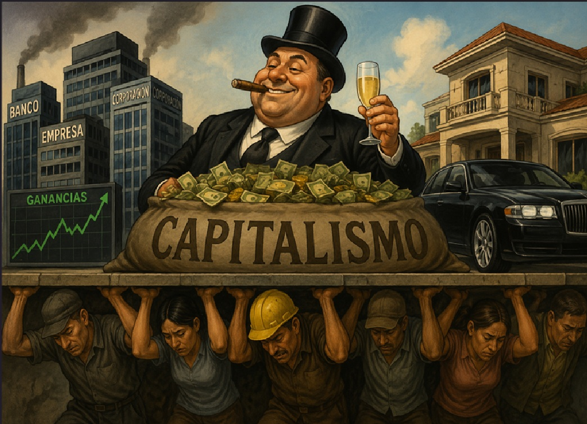
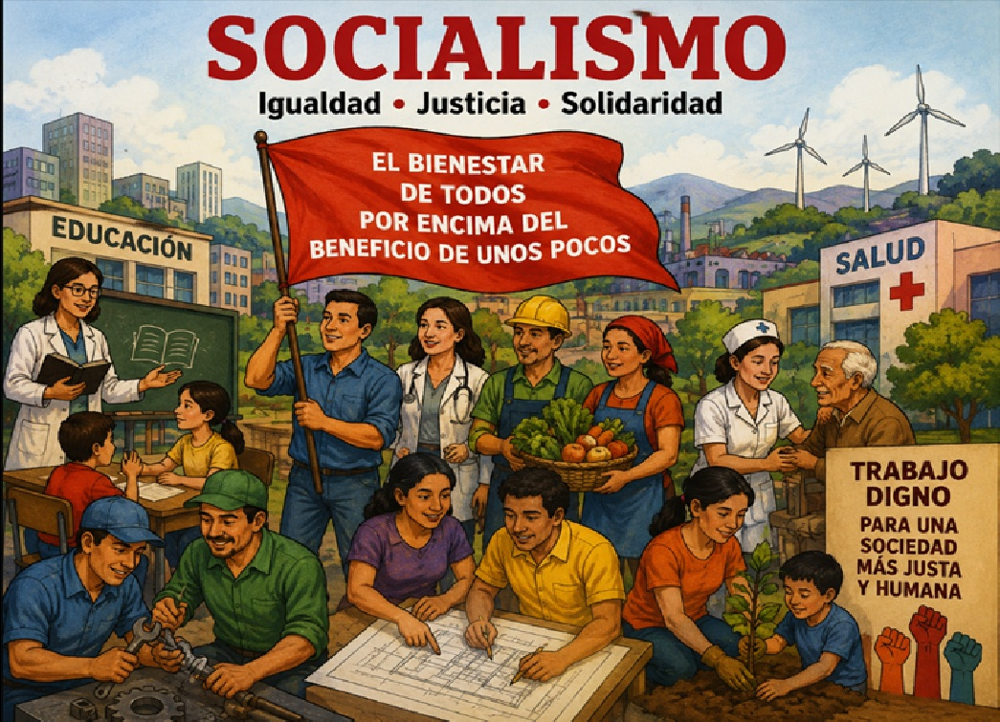

📌 Introducción
¿Alguna vez te has preguntado por qué unos países son ricos y otros pobres? ¿Por qué en algunos lugares el gobierno controla la economía mientras que en otros las personas pueden crear sus propias empresas libremente? La respuesta está en los sistemas económicos y políticos que cada país adopta.
En esta unidad final del curso de Sociales exploraremos los dos grandes sistemas que han marcado la historia del mundo moderno: el Capitalismo y el Socialismo. También haremos un repaso general de todo lo aprendido en las unidades anteriores: las etapas de la historia, el surgimiento de la economía y la Constitución Política de Colombia. ¡Prepárate para cerrar con broche de oro!
💡 ¿Sabías que...?
Durante la Guerra Fría (1947-1991), el mundo se dividió en dos bloques: el bloque capitalista liderado por Estados Unidos y el bloque socialista liderado por la Unión Soviética (URSS). Esta división marcó la política, la economía y la cultura de todo el siglo XX.
📖 Contenido Principal
🎯 Objetivo general
Comprender las diferencias fundamentales entre el capitalismo y el socialismo como sistemas económicos y políticos, y repasar los temas vistos en las unidades anteriores del curso de Sociales.
🎯 Objetivos específicos
- Definir qué es el capitalismo y cuáles son sus características principales.
- Definir qué es el socialismo y cuáles son sus características principales.
- Comparar ambos sistemas mediante ejemplos concretos y una tabla comparativa.
- Identificar qué sistema predomina en Colombia y en otros países del mundo.
- Repasar los temas clave de las unidades 1, 2 y 3 del curso de Sociales.
📌 1. ¿Qué es el Capitalismo?
El capitalismo es un sistema económico y social en el que los medios de producción (fábricas, tierras, máquinas, empresas) son de propiedad privada. Las personas y las empresas son libres de producir, vender y comprar bienes y servicios en el mercado, buscando su propio beneficio económico.
💰 El Capitalismo
El capitalismo surgió en Europa durante los siglos XV-XVIII, reemplazando al feudalismo. Grandes pensadores como Adam Smith (considerado el "padre del capitalismo") defendieron la idea de que la búsqueda del interés individual beneficia a toda la sociedad.
🔑 Características principales del Capitalismo:
- 🏭 Propiedad privada: Las personas y empresas pueden ser dueñas de fábricas, tierras, maquinaria, etc.
- 📈 Libre mercado: Los precios se definen por la oferta y la demanda, sin intervención del gobierno.
- 💼 Libre competencia: Las empresas compiten entre sí para ofrecer mejores productos a mejores precios.
- 💰 Búsqueda de ganancia: El objetivo principal es obtener beneficios económicos (ganancias).
- 👷 Trabajo asalariado: Las personas trabajan a cambio de un salario.
- 🏦 Acumulación de capital: Las ganancias se reinvierten para crecer y generar más riqueza.
✅ Ventajas del Capitalismo:
- 🔹 Fomenta la innovación y el desarrollo tecnológico (las empresas compiten por crear mejores productos).
- 🔹 Genera crecimiento económico y creación de empleos.
- 🔹 Respeto por la libertad individual y la propiedad privada.
- 🔹 Mayor eficiencia en la producción (las empresas buscan reducir costos).
❌ Desventajas del Capitalismo:
- 🔹 Desigualdad económica: La riqueza se concentra en pocas personas (ricos más ricos, pobres más pobres).
- 🔹 Explotación laboral: En algunos casos, los trabajadores reciben salarios bajos.
- 🔹 Crisis económicas: El sistema puede generar burbujas, recesiones y desempleo.
- 🔹 Daño ambiental: La búsqueda de ganancias puede llevar a la explotación excesiva de recursos naturales.
💡 El padre del Capitalismo: Adam Smith
Adam Smith (1723-1790) fue un filósofo y economista escocés que escribió el libro "La riqueza de las naciones". Él explicó que cuando cada persona busca su propio beneficio, como si una "mano invisible" la guiara, termina beneficiando a toda la sociedad. Por ejemplo, un panadero no hornea pan por bondad, sino para ganar dinero, pero al hacerlo alimenta a la comunidad.
🌎 Países con economía capitalista:
- 🇺🇸 Estados Unidos (la economía capitalista más grande del mundo).
- 🇨🇦 Canadá
- 🇩🇪 Alemania
- 🇯🇵 Japón
- 🇦🇺 Australia
- 🇨🇴 Colombia (tiene una economía capitalista con algunas regulaciones del Estado).

📌 2. ¿Qué es el Socialismo?
El socialismo es un sistema económico y social en el que los medios de producción son de propiedad colectiva o del Estado. El objetivo principal es reducir la desigualdad y garantizar que todos los ciudadanos tengan acceso a necesidades básicas como salud, educación, vivienda y trabajo.
🤝 El Socialismo
El socialismo surgió como una crítica al capitalismo durante la Revolución Industrial (siglo XIX). Pensadores como Karl Marx y Friedrich Engels denunciaron la explotación de los trabajadores y propusieron un sistema más justo donde los medios de producción pertenecieran a todos.
🔑 Características principales del Socialismo:
- 🏛️ Propiedad colectiva o estatal: El Estado o la comunidad son dueños de las fábricas, tierras y recursos.
- 📊 Planificación centralizada: El gobierno decide qué producir, cómo y para quién (no el mercado).
- ⚖️ Igualdad económica: Se busca reducir las diferencias entre ricos y pobres.
- 🏥 Servicios públicos universales: Salud, educación, vivienda y transporte son gratuitos o subsidiados.
- 👷 Protección al trabajador: Se garantizan salarios justos, sindicatos fuertes y derechos laborales.
✅ Ventajas del Socialismo:
- 🔹 Menor desigualdad: La riqueza se distribuye de forma más equitativa.
- 🔹 Servicios básicos garantizados: Salud y educación gratuitas para todos.
- 🔹 Protección del trabajador: Los empleados tienen derechos laborales protegidos.
- 🔹 Planificación económica: Se evitan crisis por sobreproducción.
❌ Desventajas del Socialismo:
- 🔹 Falta de libertad económica: Las personas no pueden crear empresas libremente.
- 🔹 Ineficiencia: Al no haber competencia, los productos pueden ser de menor calidad.
- 🔹 Burocracia: El control estatal puede generar lentitud y corrupción.
- 🔹 Falta de innovación: Sin incentivos económicos, hay menos motivación para crear nuevas tecnologías.
🌎 Países con influencia socialista:
- 🇨🇳 China (socialismo de mercado: combina control estatal con economía de mercado).
- 🇨🇺 Cuba (socialismo clásico, economía planificada).
- 🇻🇪 Venezuela (socialismo del siglo XXI).
- 🇰🇵 Corea del Norte (socialismo extremo).
- 🇸🇪 Suecia y países nórdicos (aunque son capitalistas, tienen un fuerte Estado de bienestar con servicios gratuitos).
📖 Karl Marx y el Manifiesto Comunista
Karl Marx (1818-1883) fue un filósofo alemán que escribió el "Manifiesto Comunista" junto con Engels. Marx decía que la historia de la humanidad es una historia de lucha entre clases sociales: los ricos (burguesía) contra los pobres (proletariado). Él soñaba con una sociedad sin clases donde todos fueran iguales. Sus ideas inspiraron revoluciones en Rusia (1917), China (1949), Cuba (1959) y otros países.

📌 3. Comparación: Capitalismo vs Socialismo
⚖️ Tabla Comparativa
| Aspecto | 💰 Capitalismo | 🤝 Socialismo |
|---|
| Propiedad | Privada (personas y empresas) | Colectiva o estatal |
| Mercado | Libre (oferta y demanda) | Planificado por el Estado |
| Objetivo | Obtener ganancias | Igualdad y bienestar social |
| Competencia | Sí, las empresas compiten | No hay competencia (control estatal) |
| Precios | Los define el mercado | Los define el gobierno |
| Desigualdad | Alta (brecha entre ricos y pobres) | Baja (distribución equitativa) |
| Libertad económica | Alta (cualquier persona puede crear empresa) | Baja (el Estado controla la economía) |
| Salud y educación | Pueden ser privadas o públicas | Generalmente gratuitas y universales |
| Innovación | Alta (incentivos económicos) | Baja (menos incentivos) |
| Ejemplos | EE.UU., Japón, Alemania, Colombia | Cuba, China, Corea del Norte, Venezuela |
🌍 ¿Y Colombia? ¿Qué sistema tiene?
Colombia tiene una economía capitalista con algunas características sociales. La Constitución de 1991 define a Colombia como un "Estado Social de Derecho", lo que significa que aunque la economía es de mercado (capitalista), el Estado debe intervenir para garantizar la justicia social, la igualdad y la protección de los más vulnerables. Por ejemplo, en Colombia existe salud pública (EPS), educación pública gratuita, y el Estado regula algunos precios y salarios. Esto se llama economía mixta o capitalismo con rostro humano.
📚 Repaso General: Todo lo que aprendimos
¡Ha sido un viaje increíble! A lo largo de estas 4 unidades hemos recorrido la historia de la humanidad, entendido cómo funciona la economía, conocido nuestra Constitución y explorado los grandes sistemas económicos. Ahora haremos un repaso de cada unidad.
🏛️ Unidad 1: Etapas de la Historia
En la primera unidad viajamos a través del tiempo para conocer las 5 grandes etapas de la historia:
| Etapa | Período | ¿Qué pasó? |
|---|
| 🦴 Prehistoria |
2.5 millones a.C. - 3,500 a.C. |
Surgimiento del ser humano, descubrimiento del fuego, primeras herramientas de piedra, arte rupestre. |
| 🏛️ Edad Antigua |
3,500 a.C. - 476 d.C. |
Invención de la escritura, primeras civilizaciones (Egipto, Grecia, Roma), democracia en Atenas, Imperio Romano. |
| 🏰 Edad Media |
476 d.C. - 1492 |
Caída del Imperio Romano, feudalismo, castillos, caballeros, Cruzadas, la Iglesia católica como poder central. |
| 🌎 Edad Moderna |
1492 - 1789 |
Descubrimiento de América, Renacimiento, Reforma protestante, monarquías absolutas, mercantilismo. |
| ⚡ Edad Contemporánea |
1789 - Actualidad |
Revolución Francesa, Revolución Industrial, guerras mundiales, globalización, tecnología digital. |
📌 Concepto clave: La historia nos ayuda a entender cómo hemos llegado a ser lo que somos hoy. Cada etapa construyó las bases de la siguiente.
💰 Unidad 2: Cómo surge la Economía
En la segunda unidad aprendimos que la economía es la ciencia que estudia cómo administramos los recursos para satisfacer nuestras necesidades.
🔑 Conceptos clave:
- 🔄 Trueque: Primer sistema de intercambio (intercambiar bienes por bienes). Problema: la doble coincidencia.
- 💰 Dinero: Surgió para solucionar los problemas del trueque. Evolucionó: dinero-mercancía → monedas → billetes → dinero digital.
- 🌱 Sectores económicos: Primario (agricultura, minería), Secundario (industria), Terciario (servicios).
- ⚖️ Oferta y demanda: Cuando hay mucha demanda y poca oferta, los precios suben. Cuando hay mucha oferta y poca demanda, los precios bajan.
- 🌐 Globalización: Interconexión económica entre países. Tu celular tiene componentes de todo el mundo.
- ☕ Economía colombiana: Café, petróleo, carbón, flores, esmeraldas. Colombia es reconocida mundialmente por su café.
📌 Concepto clave: La economía está presente en cada decisión que tomamos, desde comprar un dulce hasta elegir una carrera profesional.
⚖️ Unidad 3: Constitución Política de Colombia
En la tercera unidad descubrimos que la Constitución de 1991 es la ley más importante de Colombia y nos rige a todos.
🔑 Conceptos clave:
- 📜 Norma suprema: Todas las leyes deben respetar la Constitución.
- 🏛️ Estado Social de Derecho: Colombia no solo garantiza derechos individuales, sino que busca activamente la justicia social.
- 🗳️ Soberanía popular: El poder reside en el pueblo, que elige a sus gobernantes mediante el voto.
- 🛡️ Derechos fundamentales: Vida, igualdad, libertad de expresión, educación, salud, vivienda, etc.
- 🤝 Deberes: Respetar derechos ajenos, obedecer la ley, pagar impuestos, proteger el ambiente.
- 📝 Ramas del poder: Legislativa (Congreso), Ejecutiva (Presidente, gobernadores, alcaldes), Judicial (Cortes y jueces).
- 🔍 Órganos de control: Procuraduría, Contraloría, Defensoría del Pueblo, Registraduría.
- ✍️ Participación ciudadana: Voto, referendo, consulta popular, revocatoria del mandato, cabildo abierto.
📌 Concepto clave: La Constitución no es solo un documento, es la herramienta que tenemos los ciudadanos para exigir nuestros derechos y construir un país mejor.
🏭 Unidad 4: Capitalismo y Socialismo (esta unidad)
En esta unidad final aprendimos que existen dos grandes sistemas económicos que organizan la vida de los países:
- 💰 Capitalismo: Propiedad privada, libre mercado, competencia, búsqueda de ganancia. Ej: EE.UU., Japón, Colombia.
- 🤝 Socialismo: Propiedad estatal, planificación centralizada, igualdad, servicios universales. Ej: Cuba, China, Venezuela.
- ⚖️ Colombia: Economía mixta (capitalista con Estado Social de Derecho).
🎉 ¡Felicitaciones por completar el curso de Sociales!
Has recorrido un camino increíble: desde las cavernas de la Prehistoria hasta los sistemas económicos del mundo moderno, pasando por la economía, la Constitución y los derechos ciudadanos. Ahora tienes las herramientas para entender el mundo que te rodea y ser un ciudadano crítico, participativo y responsable. ¡Sigue aprendiendo y nunca dejes de preguntarte el porqué de las cosas!
📝 Actividades de aprendizaje
✏️ Actividad 1: Capitalismo vs Socialismo
Completa la siguiente tabla con las diferencias entre capitalismo y socialismo:
| Aspecto | Capitalismo | Socialismo |
|---|
| ¿Quién es dueño de las fábricas? | ______________ | ______________ |
| ¿Quién decide los precios? | ______________ | ______________ |
| ¿Hay competencia entre empresas? | ______________ | ______________ |
| Objetivo principal | ______________ | ______________ |
| Un país ejemplo | ______________ | ______________ |
✏️ Actividad 2: Preguntas de reflexión
Responde en tu cuaderno:
- ¿Crees que en Colombia hay más capitalismo o más socialismo? ¿Por qué?
- ¿Qué ventajas y desventajas ves en el sistema económico de Colombia?
- Si fueras presidente de Colombia, ¿qué cosas del capitalismo mantendrías y qué cosas del socialismo adoptarías?
- ¿Crees que es posible un sistema económico perfecto? ¿Por qué?
- ¿Qué sistema crees que protege mejor los derechos de los trabajadores? Explica.
✏️ Actividad 3: Repaso general - Mapa mental
Crea un mapa mental en tu cuaderno que conecte las 4 unidades del curso:
- 🔴 Unidad 1: Etapas de la Historia (Prehistoria → Edad Antigua → Edad Media → Edad Moderna → Edad Contemporánea).
- 🟠 Unidad 2: Cómo surge la Economía (Trueque → Dinero → Sectores económicos → Oferta y demanda → Globalización).
- 🟢 Unidad 3: Constitución Política (Estado Social de Derecho → Derechos → Deberes → Ramas del poder → Participación ciudadana).
- 🔵 Unidad 4: Capitalismo y Socialismo (Propiedad, mercado, igualdad, ejemplos en el mundo).
Dibuja flechas que conecten las unidades. Por ejemplo: ¿Cómo se relaciona la Revolución Industrial (Unidad 1) con el surgimiento del capitalismo y el socialismo (Unidad 4)? ¿Cómo se relaciona la Constitución (Unidad 3) con la economía (Unidad 2)?
✏️ Actividad 4: Debate en clase
Organícense en dos grupos para un debate:
- Grupo A: Defiende el capitalismo. Argumentos: libertad económica, innovación, crecimiento.
- Grupo B: Defiende el socialismo. Argumentos: igualdad, justicia social, servicios gratuitos.
Al final, cada persona debe escribir una reflexión personal respondiendo: ¿Qué sistema crees que es mejor para Colombia y por qué?
✏️ Actividad 5: Cuestionario de repaso final
Responde las siguientes preguntas de todas las unidades:
- ¿Cuáles son las 5 etapas de la historia?
- ¿Qué es el trueque y cuál fue su principal problema?
- ¿Cuáles son los tres sectores económicos? Da un ejemplo de cada uno.
- ¿En qué año se promulgó la Constitución de Colombia?
- ¿Qué es la Acción de Tutela y para qué sirve?
- Nombra las tres ramas del poder público y una función de cada una.
- ¿Qué significa "Estado Social de Derecho"?
- ¿Cuál es la diferencia principal entre capitalismo y socialismo?
- ¿Qué tipo de economía tiene Colombia?
- ¿Qué personaje histórico te llamó más la atención y por qué?